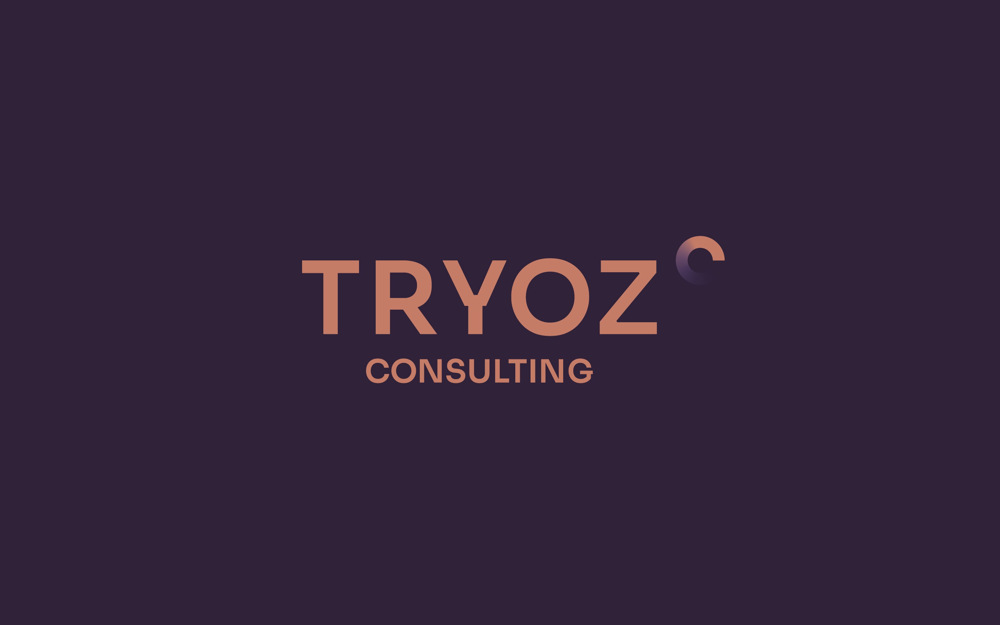
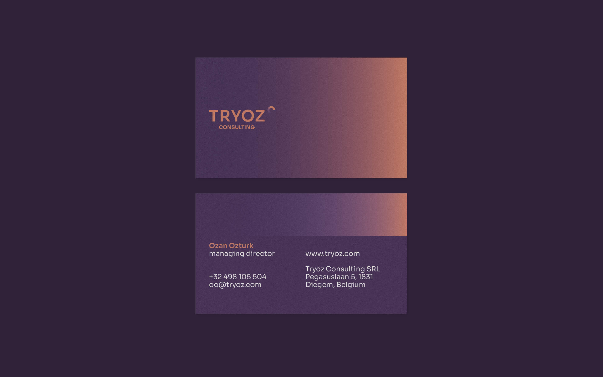
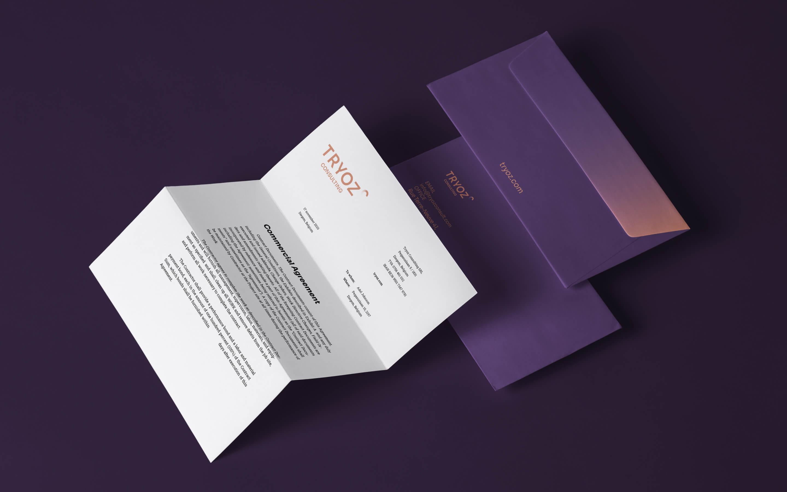
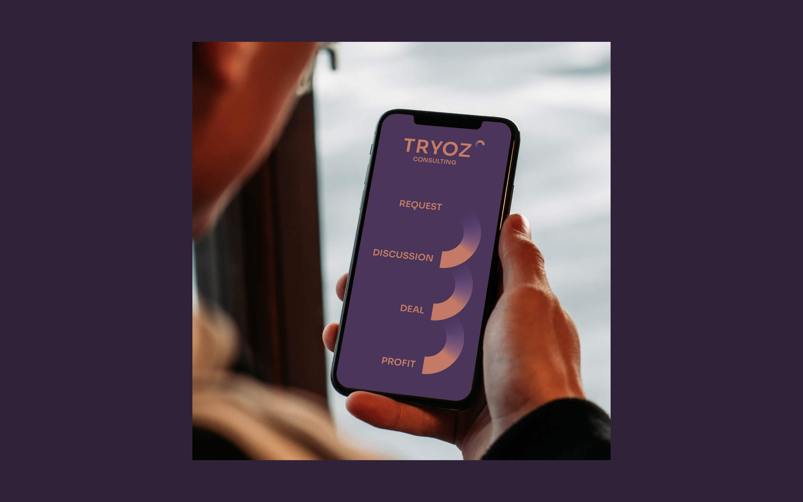
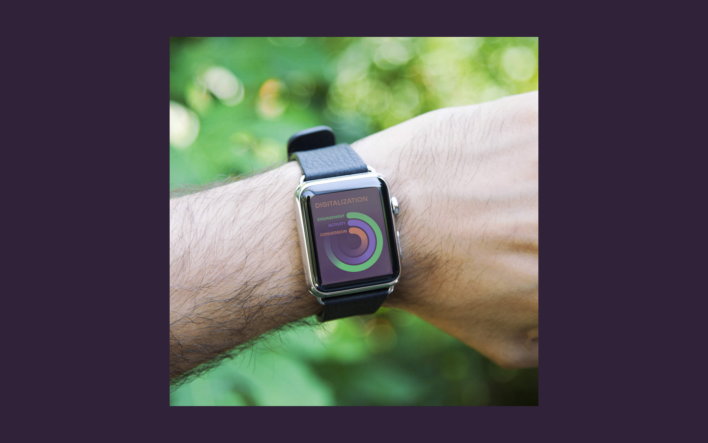

айдентика для Tryoz Consulting SRL
Empty
Tryoz Consulting оказывает консалтинговые услуги в сфере digital для B2B проектов. главные клиенты — производственные предприятия.
компании b2b сегмента считают себя традиционными и поэтому не нуждаются в присутствии в интернете. Tryoz Consulting доказывает, что постепенный перевод консервативного бизнеса в онлайн даёт положительные результаты и улучшает узнаваемость брэнда.

айдентика бренда основана на идеях движения, перезагрузки и постоянного улучшения. символ перезагрузки в логотипе отражает диджитализацию как длительный и обязательный атрибут для бизнеса.
   